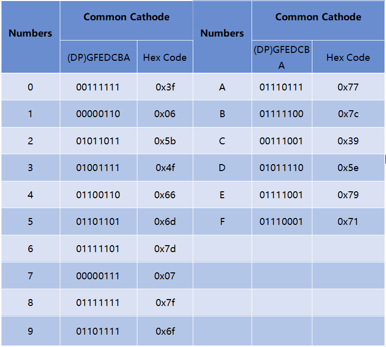

Note
Bonjour, bienvenue dans la communauté SunFounder dédiée aux passionnés de Raspberry Pi, Arduino et ESP32 sur Facebook ! Plongez plus profondément dans l’univers du Raspberry Pi, d’Arduino et d’ESP32 avec d’autres passionnés.
Pourquoi nous rejoindre ?
Support d’experts : Résolvez les problèmes après-vente et les défis techniques grâce à l’aide de notre communauté et de notre équipe.
Apprendre et partager : Échangez des astuces et des tutoriels pour développer vos compétences.
Aperçus exclusifs : Profitez d’un accès anticipé aux annonces de nouveaux produits et aux avant-premières.
Réductions spéciales : Bénéficiez de remises exclusives sur nos produits les plus récents.
Promotions festives et cadeaux : Participez à des concours et à des promotions spéciales lors des fêtes.
👉 Prêt à explorer et à créer avec nous ? Cliquez sur [Ici] et rejoignez-nous dès aujourd’hui !
1.1.4 Afficheur 7 segments
Introduction
Essayons de piloter un afficheur à 7 segments pour afficher des chiffres de 0 à 9 ainsi que les lettres de A à F.
Composants

Principe
Afficheur 7 segments
Un afficheur à 7 segments est un composant en forme de « 8 » qui regroupe 7 LED. Chaque LED est appelée un segment et, lorsqu’elle est activée, un segment forme une partie d’un chiffre ou d’une lettre à afficher.
Il existe deux types de connexions de broches : Cathode Commune (CC) et Anode Commune (CA). Comme son nom l’indique, un afficheur CC a toutes les cathodes des 7 LED connectées ensemble, tandis qu’un afficheur CA a toutes les anodes connectées ensemble. Dans ce kit, nous utilisons la version Cathode Commune (CC).

Chaque LED de l’afficheur est associée à un segment étiqueté de « a » à « g », représentant chacune des LED individuelles. L’autre broche est la broche commune pour toutes les LED. En polarisant correctement les broches des segments LED dans un ordre spécifique, certains segments s’allument et d’autres restent éteints, permettant ainsi d’afficher le caractère correspondant.
Codes d’affichage
Pour mieux comprendre comment les afficheurs 7 segments (Cathode Commune) affichent les chiffres et lettres, nous avons créé le tableau suivant. Les chiffres représentent les nombres 0-F affichés sur l’afficheur 7 segments ; (DP) GFEDCBA indique les segments LED correspondants configurés en 0 ou 1. Par exemple, 00111111 signifie que DP et G sont à 0, tandis que les autres segments sont à 1. Ainsi, le chiffre 0 est affiché sur l’afficheur 7 segments, tandis que le code HEX correspond au numéro hexadécimal.
74HC595
Le 74HC595 est composé d’un registre à décalage 8 bits et d’un registre de stockage avec des sorties parallèles à trois états. Il convertit les entrées série en sorties parallèles, ce qui permet d’économiser les ports E/S d’un microcontrôleur.
Lorsque MR (broche 10) est au niveau haut et OE (broche 13) au niveau bas, les données sont saisies sur le front montant de SHcp et transférées au registre de mémoire via le front montant de SHcp. Si les deux horloges sont connectées ensemble, le registre de décalage a toujours une impulsion d’avance sur le registre de mémoire. Il y a une broche d’entrée de décalage série (Ds), une broche de sortie série (Q) et un bouton de réinitialisation asynchrone (niveau bas) dans le registre de mémoire. Le registre de mémoire fournit une sortie parallèle 8 bits avec trois états. Lorsque OE est activé (niveau bas), les données du registre de mémoire sont envoyées au bus.

Broches du 74HC595 et leurs fonctions :
Q0-Q7 : Broches de sortie parallèle 8 bits, capables de contrôler directement 8 LED ou 8 broches d’un afficheur à 7 segments.
Q7’ : Broche de sortie série, connectée au DS d’un autre 74HC595 pour connecter plusieurs 74HC595 en série.
MR : Broche de réinitialisation, active à bas niveau.
SHcp : Entrée d’horloge du registre à décalage. Sur le front montant, les données du registre de décalage se déplacent d’un bit.
STcp : Entrée d’horloge du registre de stockage. Sur le front montant, les données du registre de décalage sont transférées au registre de stockage.
CE : Broche d’activation de sortie, active à bas niveau.
DS : Broche d’entrée de données série.
VCC : Tension d’alimentation positive.
GND : Masse.
Schéma de câblage
Connectez la broche ST_CP du 74HC595 au GPIO18 du Raspberry Pi, SH_CP au GPIO27, et DS au GPIO17. Reliez les ports de sortie parallèles aux 8 segments de l’afficheur 7 segments. Entrez les données dans la broche DS lorsque SH_CP (l’horloge d’entrée du registre de décalage) est sur le front montant, et transférez-les dans le registre de mémoire lorsque ST_CP (l’horloge d’entrée du registre de mémoire) est sur le front montant. Vous pouvez ensuite contrôler les états de SH_CP et ST_CP via les GPIO du Raspberry Pi pour convertir les données d’entrée série en données de sortie parallèle, économisant ainsi les GPIO du Raspberry Pi tout en pilotant l’afficheur.
T-Board Name |
physical |
wiringPi |
BCM |
GPIO17 |
Pin 11 |
0 |
17 |
GPIO18 |
Pin 12 |
1 |
18 |
GPIO27 |
Pin 13 |
2 |
27 |

Procédures expérimentales
Étape 1 : Construisez le circuit.

Étape 2 : Accédez au dossier contenant le code.
cd ~/davinci-kit-for-raspberry-pi/c/1.1.4/
Étape 3 : Compilez le code.
gcc 1.1.4_7-Segment.c -lwiringPi
Étape 4 : Exécutez le fichier compilé.
sudo ./a.out
Après l’exécution du code, vous verrez l’afficheur 7 segments afficher les chiffres de 0 à 9 et les lettres de A à F.
Note
Si cela ne fonctionne pas après exécution, ou si un message d’erreur apparaît : « wiringPi.h: Aucun fichier ou répertoire de ce type », veuillez vous référer à C code is not working?.
Code
#include <wiringPi.h>
#include <stdio.h>
#define SDI 0 // entrée de données série
#define RCLK 1 // entrée d'horloge de la mémoire (STCP)
#define SRCLK 2 // entrée d'horloge du registre à décalage (SHCP)
unsigned char SegCode[16] = {0x3f,0x06,0x5b,0x4f,0x66,0x6d,0x7d,0x07,0x7f,0x6f,0x77,0x7c,0x39,0x5e,0x79,0x71};
void init(void){
pinMode(SDI, OUTPUT);
pinMode(RCLK, OUTPUT);
pinMode(SRCLK, OUTPUT);
digitalWrite(SDI, 0);
digitalWrite(RCLK, 0);
digitalWrite(SRCLK, 0);
}
void hc595_shift(unsigned char dat){
int i;
for(i=0;i<8;i++){
digitalWrite(SDI, 0x80 & (dat << i));
digitalWrite(SRCLK, 1);
delay(1);
digitalWrite(SRCLK, 0);
}
digitalWrite(RCLK, 1);
delay(1);
digitalWrite(RCLK, 0);
}
int main(void){
int i;
if(wiringPiSetup() == -1){ // lorsqu'initialisation du wiring échoue, affiche un message à l'écran
printf("setup wiringPi failed !");
return 1;
}
init();
while(1){
for(i=0;i<16;i++){
printf("Print %1X on Segment\n", i); // %X means hex output
hc595_shift(SegCode[i]);
delay(500);
}
}
return 0;
}
Explication du code
unsigned char SegCode[16] = {0x3f,0x06,0x5b,0x4f,0x66,0x6d,0x7d,0x07,0x7f,0x6f,0x77,0x7c,0x39,0x5e,0x79,0x71}; Tableau des codes des segments de 0 à F en hexadécimal (Cathode commune).
void init(void){
pinMode(SDI, OUTPUT);
pinMode(RCLK, OUTPUT);
pinMode(SRCLK, OUTPUT);
digitalWrite(SDI, 0);
digitalWrite(RCLK, 0);
digitalWrite(SRCLK, 0);
}
Définir les trois broches SDI, RCLK, et SRCLK en tant que sorties, avec un état initial à 0.
void hc595_shift(unsigned char dat){}
Attribuer une valeur de 8 bits au registre à décalage du 74HC595.
digitalWrite(SDI, 0x80 & (dat << i));
Attribuer la donnée dat à SDI (DS) bit à bit. Si dat = 0x3f (0011 1111), lorsque i = 2, 0x3f se décale de 2 bits vers la gauche (<<). 1111 1100 (0x3f << 2) & 1000 0000 (0x80) = 1000 0000, ce qui est vrai.
digitalWrite(SRCLK, 1);
La valeur initiale de SRCLK est 0, ici elle passe à 1 pour générer une impulsion montante, ce qui déplace les données DS dans le registre de décalage.
digitalWrite(RCLK, 1);
La valeur initiale de RCLK est 0, ici elle passe à 1 pour générer une impulsion montante, ce qui déplace les données du registre de décalage vers le registre de stockage.
while(1){
for(i=0;i<16;i++){
printf("Print %1X on Segment\n", i); // %X means hex output
hc595_shift(SegCode[i]);
delay(500);
}
}
Dans cette boucle for, nous utilisons « %1X » pour afficher i en tant que nombre hexadécimal. Utilisez i pour trouver le code correspondant dans le tableau SegCode[], et employez hc595_shift() pour transférer le code correspondant dans le registre à décalage du 74HC595.